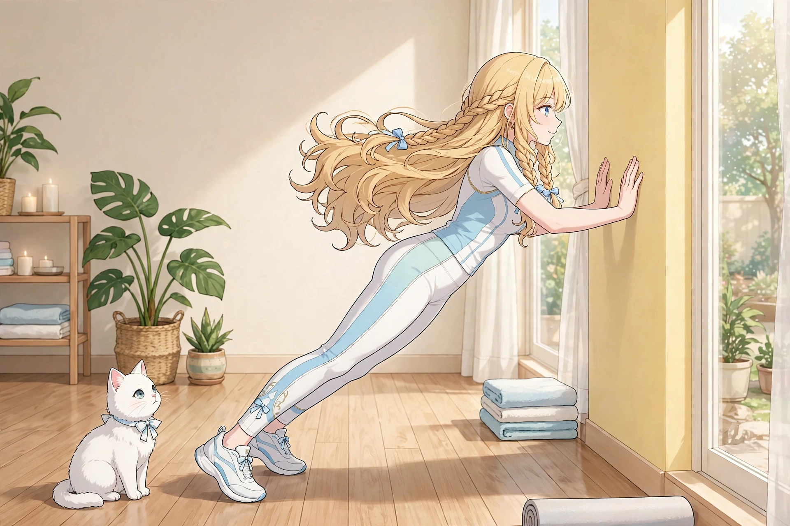
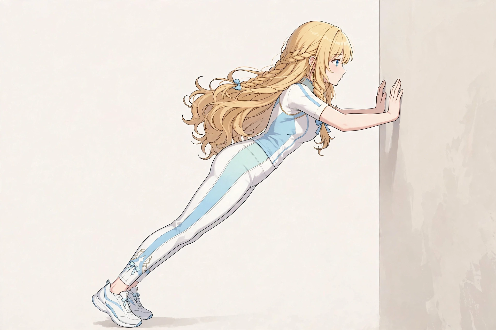
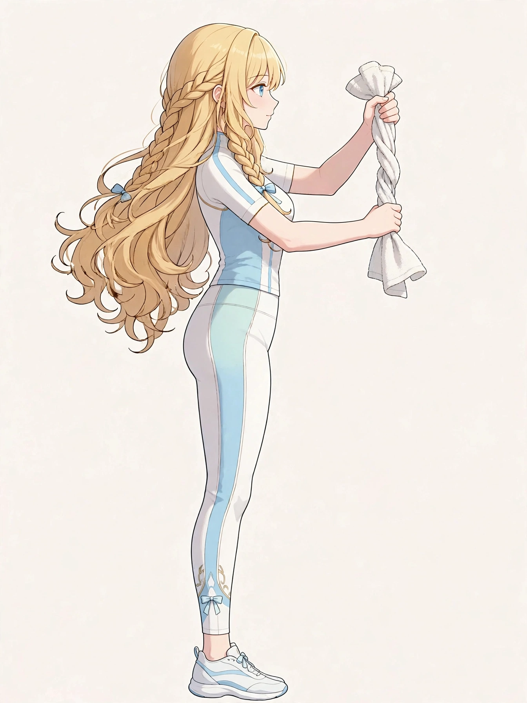

TRAINING — BODY & POSTURENo.7
二の腕引き締め｜壁プッシュとタオル絞り（女性）
TEXT — 222工房（セラピスト／パーソナルトレーナー） GUIDE — セラフィナ＆ルミ

始める前に：痛み・しびれがある場合は行わないでください。途中で痛みが出たら中止し、気になる症状が続く場合は医療機関に相談してください。回数や秒数は目安で、無理のない範囲から始めてください。
セラフィナ：二の腕は、半袖やノースリーブの見え方に直結します。壁とタオルだけでできる2つの動きを、服の見え方と一緒にまとめました。所要は約5分です。
やり方1：壁プッシュ（10回）
- 壁から一歩ほど離れて立ち、両手を肩の高さで壁につきます
- 肘を曲げて胸を壁へ近づけ、二の腕の裏側に力が入るのを感じます（図1）
- 息を吐きながら、ゆっくりと元の位置へ戻します。反動はつけません

やり方2：タオル絞り（左右各5回）
- フェイスタオルを両手で持ち、両端を反対方向へねじるように絞ります
- 二の腕の裏側と前腕に力が入るのを感じながら、5秒保ちます（図2）
- 左右のねじり方向を入れ替えて、同じように行います

服の見え方との関係
二の腕まわりがすっきりすると、半袖やノースリーブの袖口がきれいに見えます。服側の選び方は二の腕カバー トップスの選び方にまとめています。
効かせるコツと負荷の調整
壁プッシュは、壁から離れる距離で負荷が変わります。足を壁から遠ざけるほど二の腕への負荷が上がります。最初は壁から50cmほどで始め、楽に感じるようになったら10cmずつ遠ざけてください。体は頭からかかとまで一直線を保ち、腰を反らしたり落としたりしないのがコツです。タオル絞りは、ねじる動きをゆっくり行うほど効きます。反動で一気に絞らず、5秒かけて絞り切るイメージで行ってください。
回数の増やし方（4週間の目安）
- 1週目：壁プッシュ10回＋タオル絞り左右各5回を1セット、週3回
- 2週目：同じ内容を2セットに増やす
- 3週目：壁との距離を10cm遠ざけて1〜2セット
- 4週目：2セットを楽にできる回数まで増やす（上限は無理のない範囲で）
筋肉痛がある日は休んでください。痛みではなく「張り」程度なら、タオル絞りだけ軽く行う形でも大丈夫です。
日常生活でも二の腕を使う
買い物袋を持つ、洗濯物を干す、高い棚に物をしまう。こうした日常の動きでも二の腕は使われています。物の持ち上げ方を「腕だけで」ではなく「体全体で」意識すると、肩への負担が減り、二の腕にも自然に力が入ります。トレーニングと日常の動きの両方で、無理なく続けることが一番の近道です。
SHOPPING今回の用品
この記事のテーマに合う用品


あわせて読みたい：トレーニング用品一覧／巻き肩・猫背を整える
二の腕のラインは、姿勢と一緒に整えると変わりやすくなります。大阪・東三国の女性専用美容整体サロン「ステラポラリス東三国」の二の腕のお悩みページもあわせてどうぞ。
NEXT — 次に読む美しく見える歩き方｜姿勢と足の運びの基本（女性）